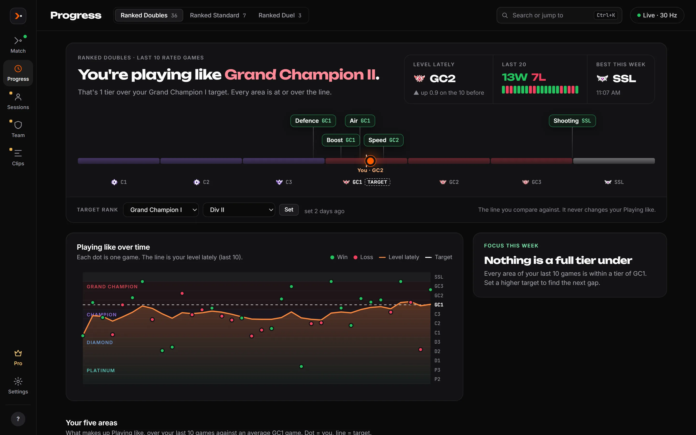

Everything Instinct does, and what it doesn't.
Three places: a small overlay in your match, the Instinct window on your PC between games, and (with Pro) your phone. Items marked Pro are part of Instinct Pro; everything else is free.
The overlay
- Playing like. The rank your game looks like in this playlist, live. Shows about 75 seconds in and updates every few seconds. Your real rank is never an input, so a great game reads high and a rough one reads low.
- Gap bars. Your speed, time supersonic and slow, time in the air and boost against your target rank's average.
- Post-game card. What you played like and what decided it, until you leave the lobby.
- Click-through and out of the way. Hotkeys to show, hide and move it. Hide player names for streaming. Colour-blind palette, text size, opacity.
- Pro Session strip, the layout editor and rank accent colours.
The Match page
- Your last game: score, Playing like against your target and a goal timeline.
- What decided it: every stat next to your target rank's average, with a plain verdict and a one-line definition.
- Before your next game: what to practise, picked from your recent games. Pro Train next drills with a timer.
- In a match: scoreboard, live Playing like, live gaps and the match feed.

Progress
- "You're playing like…" in words, from your level lately (the last ten rated games).
- The rank ladder with you, your target and your five areas: defence, air, boost, speed and shooting.
- Every game on a chart with rank bands, the area to focus on, your stats lately and the match list. Open any match for its full breakdown.
- The last 30 days on Free; older games are kept on your PC, never deleted. Pro shows all of it, plus "vs your usual" and your trend.

Save a replay, get a sharper read.
Saving a replay in Rocket League is always optional. When you do, Instinct reads it on your PC (nothing is uploaded) and adds to that match. Every screen is complete without them.
Sharper Playing like and positioning
A more precise read for that match, plus where you were: behind the ball, closest to the ball, last back, thirds of the field, ground and air.
Replay analysis
Rotation mistakes, what each touch led to, where your shots went, recoveries, mechanics, possession, heatmaps and kickoffs, plus the moment behind each goal against.
Sessions, teams and the rest.
Session tracker
A session is play in a row with no break over 15 minutes. See wins and losses by mode, how you played in each playlist against your usual, free play and training pack time, and a calendar of when you play.
Teams
Create a team, invite your duo or trio, and see your shared record, sessions you played together, where each of you plays like on the ladder, and together vs apart.
Clips
Save the last 30 seconds with a hotkey. Clips stay in your Videos folder.
Share cards
One hotkey saves a picture of your game's best moment and copies it, ready to post.
Phone companion
Pair your phone on the same Wi-Fi to see the live view, the breakdown and your history from the couch.
Cloud sync and export
Sign in to keep your match summaries and sessions across PCs, and export your cloud history as JSON.
What it can't see.
Rocket League's live Stats API doesn't send passes, possession, boost pads, car positions, rotation or whiffs, and it sends no car data for opponents. So the live overlay never claims those. Positions appear only from replays you save.
Other players aren't rated or tracked. Their in-match names and that game's scoreboard line stay in your own match records on your PC, and nothing about them goes to the cloud.
Find out what you're really playing like.
Free for Windows 10 and 11. Set up in two minutes, read your next game live.